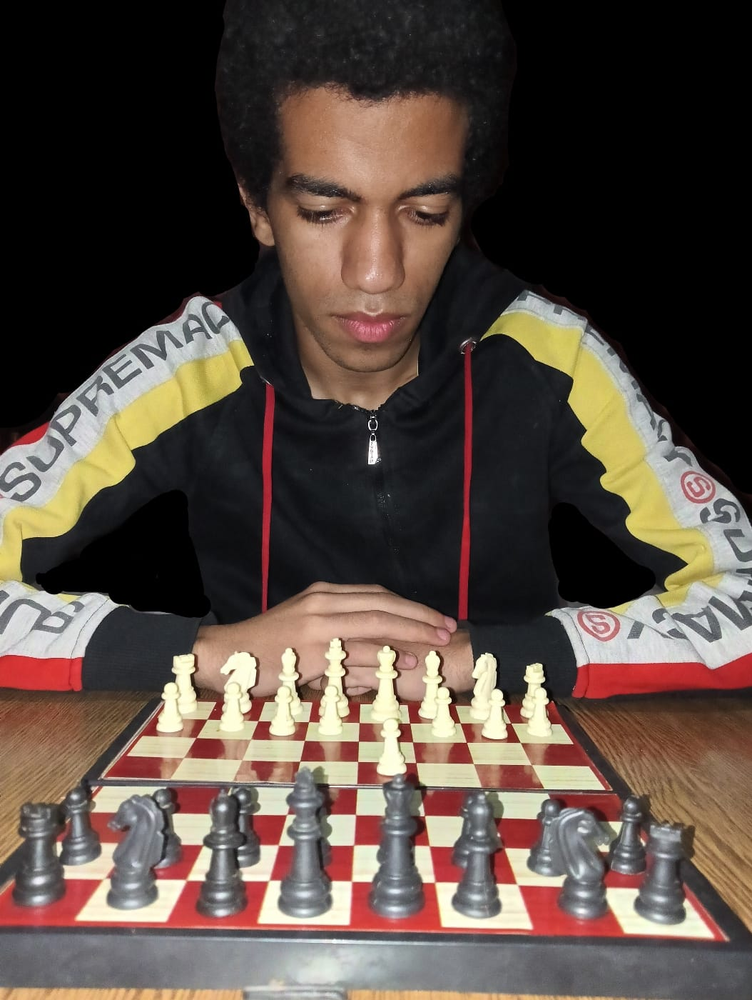
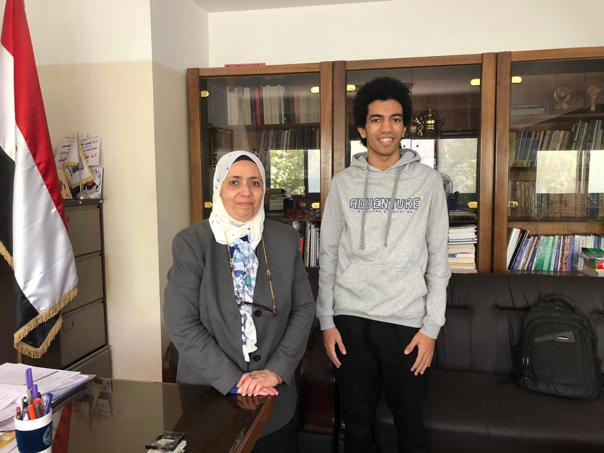

Youssef Aboelgheit Ali Ahmed, a software engineer and chess player was borned in 2003, Assiut, Egypt, plays chess as a hobby and participates in chess tournaments in Assiut, Cairo and online. Win prizes from Assiut University and other competitions. Honored by the head of Faculty of Computers and Information for ranking third place of University Blitz Chess Tournament 2024. One of top 70 chess Egyptian players online on chess.com platform by rating 2311 rapid. The current Fide rating is 1737.
| Achievement | Prizes | Date |
|---|---|---|
| Contributed with college team to winning third place of University Classical Chess Teams Tournament | 300 EGP | 2023 |
| Third place of University Blitz Chess Tournament | 300 EGP | |
| Third place of University Blitz Chess Tournament | 300 EGP + Honored by the head of Faculty of Computers and Information |
2024 |
| First place under 1800 Fide in Aboteeg Second Rapid Chess Tournament. Show statistics | 500 EGP + Medal + Certificate | 2025 |


